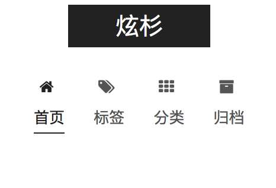

昨天收到一封域名过期的邮件，顺手上去看了看有没有合适的域名。顺手也就搭了个Jekyll的博客。
本托管在coding上，不过云里雾里，弄得还是不满意。
今天决定换成Hexo。再托管在Git上。一节课的功夫，很顺利的就完成了。写个文章记录下。
今天博客就算是搭建完成了。
搭建
Hexo安装
参考官方文档，安装还是顺利的。
主题
Next主题。Hexo半壁江山了快😂😂😂
Problems
分类创建
下载了Next主题。默认是没有开启分类的。查阅文档，找到了创建命令：
hexo new page "categorie"
然后打开自动建立的index.md 加入一行：
type: "categories"
设置多Tag
只需要在tag标签里这么写：
tag: [tag1,tag2,...]
md文件命名
在终端下，Hexo new 出的文章被完全放在
-post一个文件夹下。时间长了这个文件夹岂不是会很乱？
可是我也不想用Jekyll那种日期的命名方式。
我是想用子文件夹来当做分类，感觉管理起来也方便很多。
暂时用date-title命名的方式吧。
插图问题

插入媒体
<iframe frameborder="no" border="0" marginwidth="0" marginheight="0" width=330 height=86
src="//music.163.com/outchain/player?type=2&id=544918737&auto=1&height=66">
</iframe>
看来Hexo是支持iframe的
支持嵌入HTML
自定义域名
手上有个空闲的.win域名。就先凑合用着吧。.io 等博客成型了就买一个。
试了下把代码部署到 coding.net 上 ,访问地址，ping 的平均延迟都能低于50ms
然而部署都 github.io ，ping 最快也得100 ms【香港节点 2ms，然并卵】
自定义域名方法：
1、在source文件夹中新建一个CNAME文件（无后缀名），然后用文本编辑器打开，在首行添加你的网站域名，如xxxx.com，注意前面没有http://，也没有www，然后使用
hexo g && hexo d上传部署。2、在域名解析提供商，下面以dnspod为例。
（1）先添加一个CNAME，主机记录写@，后面记录值写上你的http://xxxx.github.io
（2）再添加一个CNAME，主机记录写www，后面记录值也是http://xxxx.github.io
这样别人用www和不用www都能访问你的网站（其实www的方式，会先解析成http://xxxx.github.io，然后根据CNAME再变成http://xxx.com，即中间是经过一次转换的）。上面，我们用的是CNAME别名记录，也有人使用A记录，后面的记录值是写github page里面的ip地址，但有时候IP地址会更改，导致最后解析不正确，所以还是推荐用CNAME别名记录要好些，不建议用IP。3、等十分钟左右，刷新浏览器，用你自己域名访问下试试
作者：skycrown链接：https://www.zhihu.com/question/31377141/answer/87541858
来源：知乎著作权归作者所有。商业转载请联系作者获得授权，非商业转载请注明出处。
访问下试试 https://o--o.win
同时部署到github和coding
根据Hexo的官方文档，只需要这么设置：
deploy:
type: git
message: [message]
repo:
github:,[branch]
gitcafe:,[branch]
Example:

Note: <repository url>,[branch] 中 ,后不要跟空格直接根branch名。
最终还是把域名绑在了Coding。速度快多了。